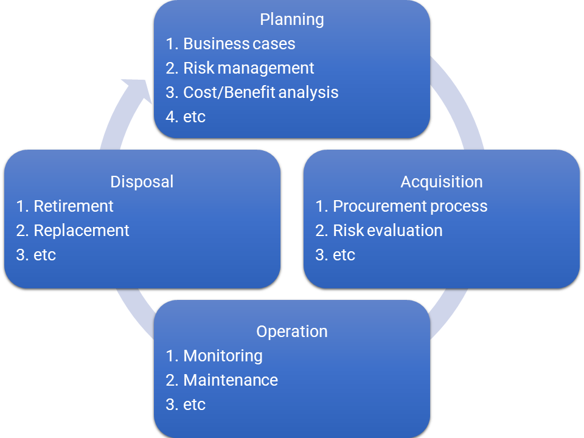

Introduction
The purpose of this post is twofold ✌ï¸; document my learnings 📠about what asset management is, and the role I played recently in a gig with asset management and data analytics.
1️⃣ Asset Management
I will by qualifying what is considered an asset:
- Plant ğŸ(chiller, boiler, compressor, generator, tracks, cabling, racks, piping, etc.).
- Equipment 🖥️(computer, router, switch, CT scanner, X-ray machines, MRI machines, etc.).
- Buildings 🏨.
- Intellectual property © (Know-how, patents, copyrights, designs, etc.).
- Software licenses 📀.
Note: I have intentionally omitted financial assets, as they fall outside the scope of my work.
Assets have life-cycles within organizations, which go through four phases: 1. Planning ğŸ“, 2. Acquisition 🛒, 3. Operation 🏃, 4. Disposal ♻️.
Asset management, as defined by the standard ISO 50000, defines a systematic approach for managing assets with the following goals:
- Reducing the cost 💲 across the life-cycle of the asset.
- Reduce risk âš ï¸ and keep it under agreed and acceptable levels.
- Meet service level agreements (performance).
- Meet organizational sustainability obligations.
In other words, asset management defines processes and procedures for optimizing the return-on-investment (ROI) 💰 from assets across the four phases of their life-cycles.
The following diagram outlines some of the processes at each phase.

Operational asset management
Operational asset management defines processes and procedures for assets in operation. Monitoring is one of the processes, it defines the method of monitoring, the parameters to be captured, the frequency of information capture, the location of information, etc.
Maintenance is another process or set of processes, it defines the maintenance procedure, frequency, thresholds, records location, etc.
Asset Management Accountability Framework (AMAF)
The Asset Management Accountability Framework (AMAF) is an important tool for managing assets, developed by the Department of Treasury and Finance (DTF) of Victoria State Government for the public sector. This framework outlines mandatory requirements and general guidance for public sector organizations to effectively manage their assets and meet service level obligations to the public.
Further information about AMAF can be found here
2️⃣ Data Analytics
It should be obvious by now that data is going to be collected across the life-cycle of assets to facilitate decision-making towards achieving the asset management objectives.
Techniques 👨‍💻
Among the data analytics techniques that can be used in for asset management include:
✔ Data QA,
✔ Data modeling,
✔ Summary statistics,
✔ Basic algebra,
✔ Understanding of metricsğŸ“,
✔ Time-series analysis and prediction,
✔ Anomaly detection🙃,
✔ Monte Carlo simulation 🎲,
✔ Data visualization 📈 and dashboard development.
Scenario
In a recent gig, I was presented with an open-ended problem in which a business was struggling to keep up with the monitoring of a particular type of asset due to the lack of accurate and centralized data.
The business owned ~1200 units of this asset spread across ~600 sites and asset state monitoring was conducted once every year. To allow for accurate scheduling of the monitoring program, they need to have an accurate asset register.
The organization was in the process of establishing a centralized asset register, with data primarily captured in spreadsheets by various teams. This presented challenges for monitoring technicians, who would often discover newly installed assets during on-site monitoring visits. This disrupted the monitoring schedule, as the organization was undergoing a period of growth and new assets were being introduced frequently.
In summary, newly installed assets were not documented anywhere for the monitoring team and other teams to manage properly.
If you are thinking wow, data about the asset is being captured once every year! I can tell you that it is acceptable for this particular asset type, given its role and criticality.
My contributions
After a lot of consultations with various stakeholders across the organization, I was able to gather a clearer picture of the process, enabling me to pinpoint where it was failing.
If you have been following along, you should be able to discern that the problem is that the data was not centralized and communication between commissioning and monitoring teams was broken.
The solution to this problem is to centralize the data and modify the process to enable the commissioning team to add newly deployed assets. That is easier said than done ğŸ¤.
The project face numerous challenges including:
Monitoring data was not normalized and didn’t adhere to a unified data model. It was stored in one big jungle of a spreadsheet. Understanding how it worked was a challenge, let alone extracting the data.
Internal resistance to change.
Time limitation.
To be able to deliver an improvement, I had to split the project into phases, outlining what can be expected at the end of each phase. These phases had to avoid introducing any breaking changes to the process.
By the end of the time allocated to the project, I was able to finish the first phase, which delivered:
- a centralized spreadsheet,
- with a data model,
- and instructions on how data should be captured to guarantee uniqueness and consistency.
- A working process that guarantees recency in terms of the deployed assets.
- A documentation of what the next phase should deliver.
3️⃣ Reflection
Among the skills, working on this project has highlighted are the:
- Ability to manage change ✨, this goes beyond basic communications. People are going to resist change, and communicating change with people at various levels of the hierarchy is a skill in its own right.
- Ability to be work with minimal guidance 🔥 and be a self-starter. What to do next is not always clear.
- Working collaboratively 🤝🏾 with others.
- Attention to detail 🔎.
- Technical skills 👩🏻‍💻, including intermediate to advanced spreadsheet skills, data modeling, scripting, and data visualization.
🚀 If you’re someone who’s passionate about asset management, engineering, or IT, have you ever considered turning your expertise into a career in data analytics? Now is the perfect time to make the switch. Companies are rapidly digitizing and they’re on the lookout for people like you who can plan and develop data collection and reporting.